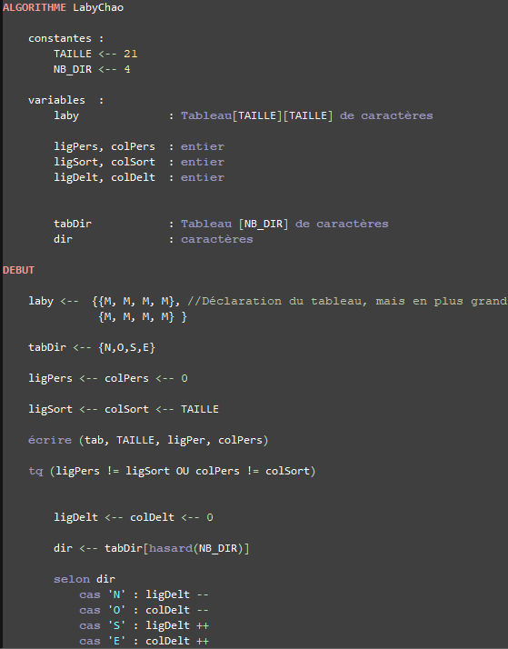
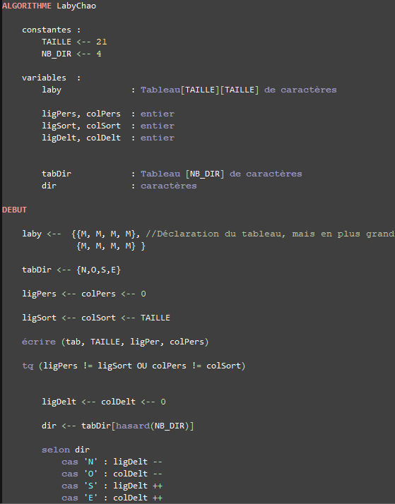

Ceux-ci est le langage du pseudo-code. Le pseudo code est un langage nous permettant de réfléchir à la structure du code. Il est important de noter, qu'il y a beaucoup d'exemple, je vous conseil donc de regarder le github Pseudo Code .
Ceux-ci est le langage du pseudo-code. Le pseudo code est un langage nous permettant de réfléchir à la structure du code. Il est important de noter, qu'il y a beaucoup d'exemple, je vous conseil donc de regarder le github Pseudo Code .

Ceux-ci est le un schéma d'algorihme fait en terminal pour un projet de remontoir à montre.
Ce genre de schéma peut être facilement lu sur de petit algorithm, mais il peut vite devenir farfelu
sur de plus grand projet. (notez que ceux-ci n'est qu'un extrait)